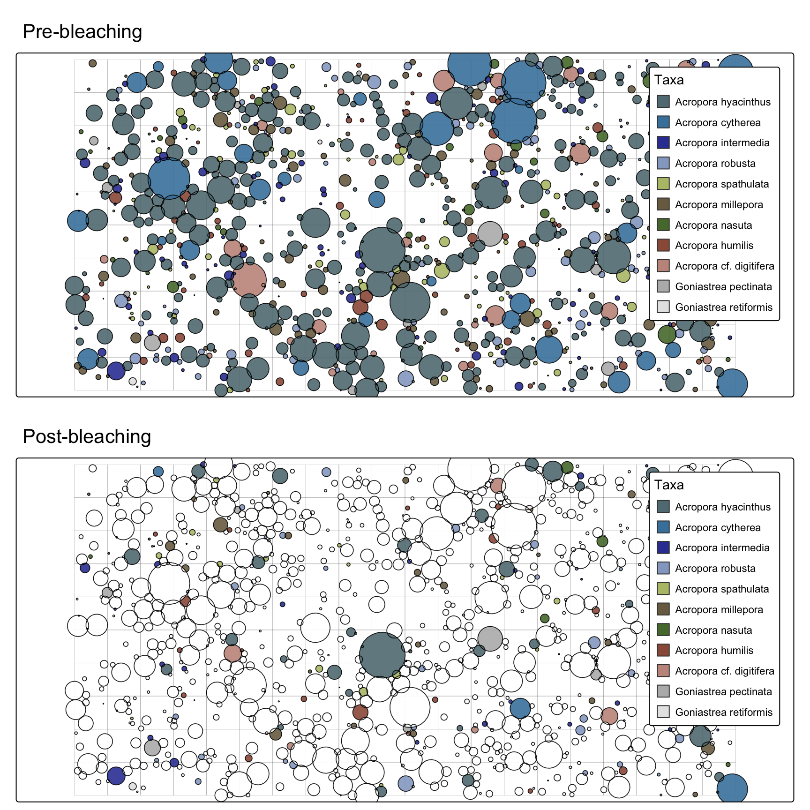
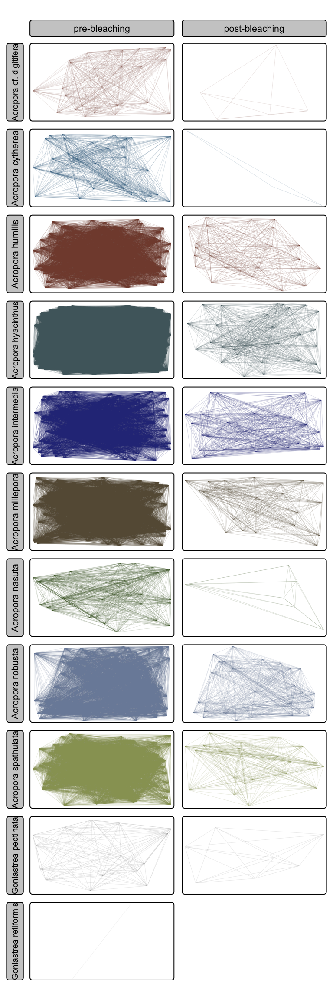
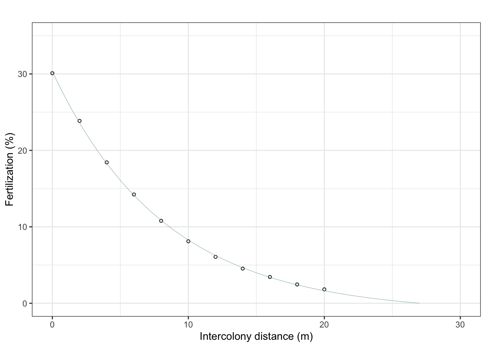
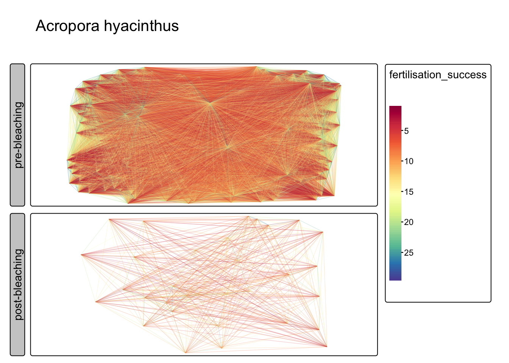
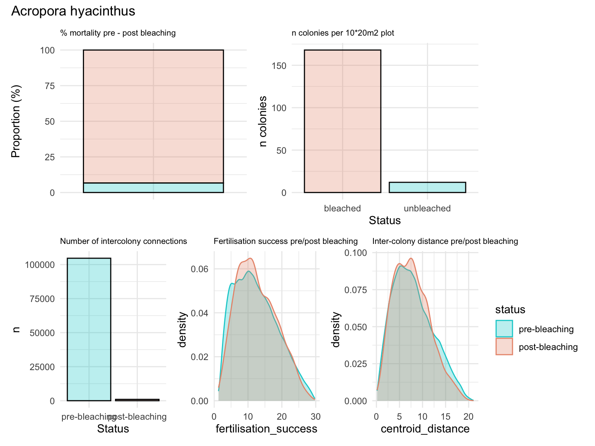
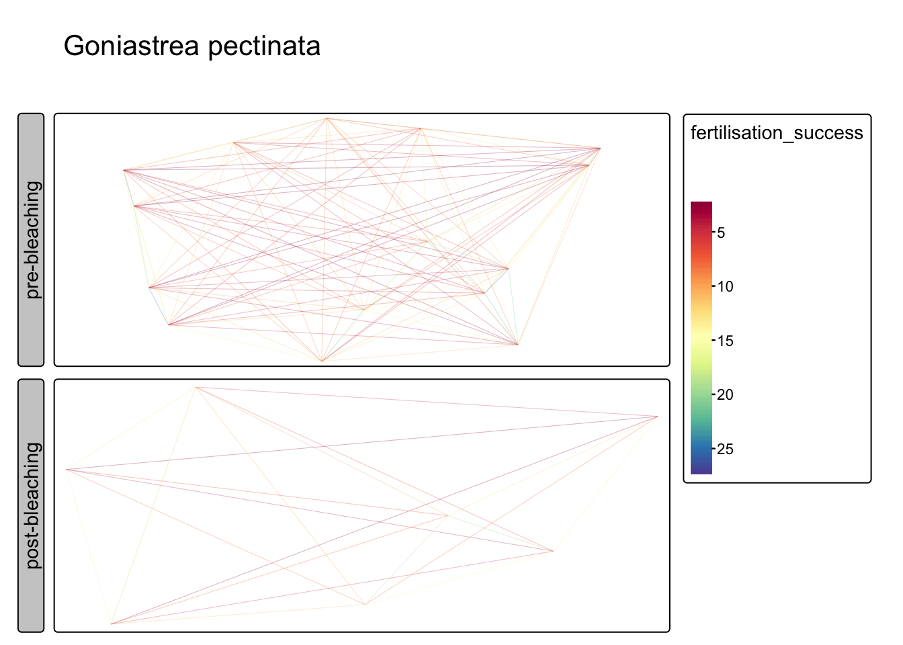
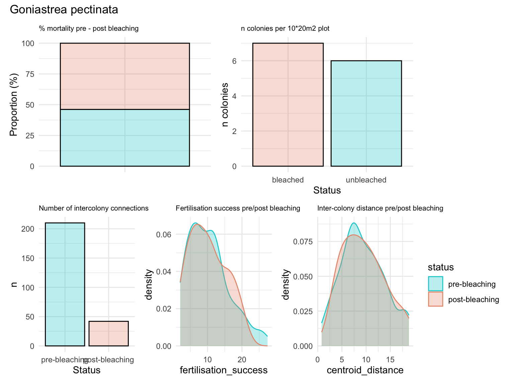
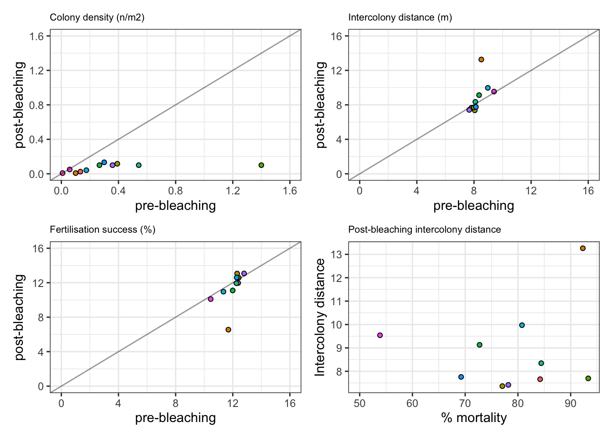

allee effects
2024 “bleaching” scenario
simulate 20 X 10m plot at 40% cover:
Code
library(tidyverse)
library(sf)
library(tmap)
library(reefspawn)
seedval = 321
coral_size_2024 <- simulate_coralsize(coralsize |> filter(year==2011),
distribution = "rlnorm",
ndraws = 2000,
seed = seedval)
sf_plot <- setplot(20,10) # default EPSG:3857
coralsizepredictions <- posterior_coral_predict(brm = brm_sizedistribution,
newdata = coral_size_2024,
seed = seedval)
communities <- simulate_community(setplot = sf_plot,
coralcover = 40,
size = coral_size_2024,
seed = seedval)
populations <- simulate_populations(setplot = sf_plot,
size = coral_size_2024,
community = communities,
return="sf",
seed = seedval)
reproductive_populations <- simulate_spawning(populations = populations,
setplot = sf_plot,
seed = 123)
reproductive_populations_postbleaching <- simulate_bleaching(populations = reproductive_populations)
prebleachingplot <- map_populations(setplot = sf_plot,
populations = reproductive_populations, # or reproductive output, same sf population
interactive = FALSE) + tm_title("Pre-bleaching")
postbleachingplot <- map_populations(setplot = sf_plot,
populations = reproductive_populations_postbleaching, # or reproductive output, same sf population
interactive = FALSE) + tm_title("Post-bleaching")
tmap::tmap_arrange(prebleachingplot, postbleachingplot, ncol=1)
Calculate allee effects (intercolony distances)
Plot intraspecific distance matrix as spatial connectivity (i.e. distances between colonies before and after bleaching in cartesian space)
Code
pre_bleaching_allee <- calculate_allee_effects(populations = reproductive_populations_postbleaching,
metric = "centroid_distance",
label = "pre-bleaching")
post_bleaching_allee <- calculate_allee_effects(populations = reproductive_populations_postbleaching |> filter(status=="unbleached"),
metric = "centroid_distance",
label = "post-bleaching")
all_combined_allee <- rbind(pre_bleaching_allee, post_bleaching_allee) |>
mutate(status = factor(status, levels=c("pre-bleaching", "post-bleaching")))
tm_shape(all_combined_allee) +
tm_lines(col="species",
col.legend = tm_legend_hide(),
col.scale = tm_scale_categorical(values=sp_pal(), levels.drop=FALSE),
lwd=0.1) +
tm_facets_grid(columns="status", rows="species")
Calculate fertilisation success
Reproduce Fig 2b PNAS paper (check tail for exponential decay later)
Code
# Fit non-linear curve: exponential decay model
library(tidyverse)
# Input data
df <- tibble::tibble(
distance = c(0, 2, 4, 6, 8, 10, 12, 14, 16, 18, 20),
fertilization = c(30.1, 23.86, 18.43, 14.23, 10.79, 8.11, 6.07, 4.54, 3.44, 2.46, 1.82)
)
# Exponential decay fit
exp_decay_fit <- nls(
fertilization ~ a * exp(b * distance) + c,
data = df,
start = list(a = 28, b = -0.2, c = 2)
)
# Exponential plateau fit
exp_plateau_fit <- nls(
fertilization ~ c + a * exp(-b * distance),
data = df,
start = list(a = 28, b = 0.2, c = 2)
)
# Generate prediction curves
distance_seq <- seq(0, 30, 0.1)
decay_curve <- tibble(
distance = distance_seq,
fertilization = predict(exp_decay_fit, newdata = tibble(distance = distance_seq)),
model = "Exponential Decay"
)
plateau_curve <- tibble(
distance = distance_seq,
fertilization = predict(exp_plateau_fit, newdata = tibble(distance = distance_seq)),
model = "Exponential Plateau"
)
# Combine curves
curve_df <- bind_rows(decay_curve, plateau_curve)
# Plot
ggplot(df, aes(distance, fertilization)) +
geom_point(size = 1.2, shape=21) +
geom_line(data = curve_df, aes(x = distance, y = fertilization, color = model), linewidth = 0.1, show.legend=FALSE) +
theme_bw() + ylim(0,35) +
labs(title = "", y = "Fertilization (%)", x = "Intercolony distance (m)")
Quantify allee effects (Acropora hyacinthus)
Fit exponential decay to distance data, map fertilisation success (i.e. distance) for a single species- A.hyacinthus
Code
# fit exponential decay to distance data
all_combined_allee_fertilisation <- all_combined_allee |>
mutate(fertilisation_success = round(predict(exp_decay_fit, newdata = data.frame(distance = centroid_distance)), 2))
allee_hyacinthus <- all_combined_allee_fertilisation |>
dplyr::filter(species == "Acropora hyacinthus")
tm_shape(allee_hyacinthus) +
tm_lines(
col = "fertilisation_success",
col.scale = tm_scale_continuous(values="brewer.spectral"),
#col.legend = tm_legend_hide(),
lwd = 0.1
) +
tm_facets_grid(rows="status") + tm_title("Acropora hyacinthus")
Summary statistics for hyacinthus - 93.6% mortality, 6.7% survival - 180 colonies pre-bleaching, 12 colonies surviving - no clear reduction in intracolony distance (despite mass mortality) - no impact on fertilisation success (assuming homogeneity in dispersal)
Code
a <- reproductive_populations_postbleaching |>
filter(species == "Acropora hyacinthus") |>
filter(output > 0) |>
as.data.frame() |>
count(status) |>
mutate(prop = n / sum(n) * 100) |>
ggplot(aes(x = "", y = prop, fill = status)) +
geom_col(alpha = 0.3, color = "black", position = "stack", show.legend=FALSE) +
theme_minimal() +
ylab("Proportion (%)") +
xlab("") +
ggtitle("% mortality pre - post bleaching") +
theme(plot.title = element_text(size = 8)) +
scale_fill_manual(values=c("darksalmon", "darkturquoise"))
b <- reproductive_populations_postbleaching |>
filter(species=="Acropora hyacinthus") |>
as.data.frame() |>
filter(output > 0) |>
count(status) |>
mutate(prop = n / sum(n) * 100) |>
ggplot(aes(x = status, y = n, fill = status)) +
geom_col(alpha=0.3, col="black", show.legend=FALSE) +
theme_minimal() +
ylab("n colonies") +
xlab("Status") + ggtitle("n colonies per 10*20m2 plot") +
theme(plot.title = element_text(size = 8)) +
scale_fill_manual(values=c("darksalmon", "darkturquoise"))
c <- allee_hyacinthus |>
as.data.frame() |>
count(status) |>
mutate(prop = n / sum(n) * 100) |>
ggplot(aes(x = status, y = n, fill = status)) +
geom_col(alpha=0.3, col="black", show.legend=FALSE) +
theme_minimal() +
ylab("n") +
xlab("Status") +
ggtitle("Number of intercolony connections") +
theme(plot.title = element_text(size = 8)) +
scale_fill_manual(values=c( "darkturquoise", "darksalmon"))
d <- ggplot() + theme_minimal() + ggtitle("Fertilisation success pre/post bleaching") +
geom_density(data = allee_hyacinthus,
aes(fertilisation_success, color = status, fill = status),
alpha = 0.3, show.legend = FALSE) +
theme(plot.title = element_text(size = 8)) +
scale_fill_manual(values=c( "darkturquoise", "darksalmon")) +
scale_color_manual(values=c( "darkturquoise", "darksalmon"))
e <- ggplot() + theme_minimal() + ggtitle("Inter-colony distance pre/post bleaching") +
geom_density(data = allee_hyacinthus,
aes(centroid_distance, color = status, fill = status), alpha=0.3) +
theme(plot.title = element_text(size = 8)) +
scale_fill_manual(values=c( "darkturquoise", "darksalmon"))+
scale_color_manual(values=c( "darkturquoise", "darksalmon"))
library(patchwork)
(a+b)/(c+d+e) + plot_annotation(title = 'Acropora hyacinthus')
Quantify allee effects (Goniastrea pectinata)
Fit exponential decay to distance data, map fertilisation success (i.e. distance) for a G.pectinata
Code
# fit exponential decay to distance data
all_combined_allee_fertilisation <- all_combined_allee |>
mutate(fertilisation_success = round(predict(exp_decay_fit, newdata = data.frame(distance = centroid_distance)), 2))
allee_goniastrea <- all_combined_allee_fertilisation |>
dplyr::filter(species == "Goniastrea pectinata")
tm_shape(allee_goniastrea) +
tm_lines(
col = "fertilisation_success",
col.scale = tm_scale_continuous(values="brewer.spectral"),
#col.legend = tm_legend_hide(),
lwd = 0.1
) +
tm_facets_grid(rows="status") + tm_title("Goniastrea pectinata")
Summary statistics for goniastrea - 93.6% mortality, 6.7% survival - 180 colonies pre-bleaching, 12 colonies surviving - no clear reduction in intracolony distance (despite mass mortality) - no impact on fertilisation success (assuming homogeneity in dispersal)
Code
a <- reproductive_populations_postbleaching |>
filter(species == "Goniastrea pectinata") |>
filter(output > 0) |>
as.data.frame() |>
count(status) |>
mutate(prop = n / sum(n) * 100) |>
ggplot(aes(x = "", y = prop, fill = status)) +
geom_col(alpha = 0.3, color = "black", position = "stack", show.legend=FALSE) +
theme_minimal() +
ylab("Proportion (%)") +
xlab("") +
ggtitle("% mortality pre - post bleaching") +
theme(plot.title = element_text(size = 8)) +
scale_fill_manual(values=c("darksalmon", "darkturquoise"))
b <- reproductive_populations_postbleaching |>
filter(species=="Goniastrea pectinata") |>
as.data.frame() |>
filter(output > 0) |>
count(status) |>
mutate(prop = n / sum(n) * 100) |>
ggplot(aes(x = status, y = n, fill = status)) +
geom_col(alpha=0.3, col="black", show.legend=FALSE) +
theme_minimal() +
ylab("n colonies") +
xlab("Status") + ggtitle("n colonies per 10*20m2 plot") +
theme(plot.title = element_text(size = 8)) +
scale_fill_manual(values=c("darksalmon", "darkturquoise"))
c <- allee_goniastrea |>
as.data.frame() |>
count(status) |>
mutate(prop = n / sum(n) * 100) |>
ggplot(aes(x = status, y = n, fill = status)) +
geom_col(alpha=0.3, col="black", show.legend=FALSE) +
theme_minimal() +
ylab("n") +
xlab("Status") +
ggtitle("Number of intercolony connections") +
theme(plot.title = element_text(size = 8)) +
scale_fill_manual(values=c( "darkturquoise", "darksalmon"))
d <- ggplot() + theme_minimal() + ggtitle("Fertilisation success pre/post bleaching") +
geom_density(data = allee_goniastrea,
aes(fertilisation_success, color = status, fill = status),
alpha = 0.3, show.legend = FALSE) +
theme(plot.title = element_text(size = 8)) +
scale_fill_manual(values=c( "darkturquoise", "darksalmon")) +
scale_color_manual(values=c( "darkturquoise", "darksalmon"))
e <- ggplot() + theme_minimal() + ggtitle("Inter-colony distance pre/post bleaching") +
geom_density(data = allee_goniastrea,
aes(centroid_distance, color = status, fill = status), alpha=0.3) +
theme(plot.title = element_text(size = 8)) +
scale_fill_manual(values=c( "darkturquoise", "darksalmon"))+
scale_color_manual(values=c( "darkturquoise", "darksalmon"))
library(patchwork)
(a+b)/(c+d+e) + plot_annotation(title = 'Goniastrea pectinata')
Summary allee effects
Mass reduction in colony densities post-bleaching, yet minimal reduction in intercolony distance / fertilisation success No impact as low as 0.5 colonies per m2 (but will impact rare taxa (either post-bleaching losses below a threshold or initially rare species)
Code
tmp <- reproductive_populations_postbleaching |>
filter(output > 0) |>
as.data.frame() |>
count(species, status) |>
mutate(n = n / 120) |>
pivot_wider(names_from="status", values_from="n") |>
mutate(prop = bleached/(bleached+unbleached) * 100)
allee1 <- ggplot() + theme_bw() +
geom_point(data = tmp, aes(bleached, unbleached, fill=species), shape=21, size=1.5, show.legend=FALSE) +
# ggrepel::geom_text_repel(data = tmp, aes(bleached, unbleached, label=species), max.overlaps=100) +
scale_x_continuous(limits=c(0,1.6), breaks = seq(0,1.6,0.4)) +
scale_y_continuous(limits=c(0,1.6), breaks = seq(0,1.6,0.4)) +
geom_abline(alpha=0.4) +
xlab("pre-bleaching") +
ylab("post-bleaching") +
ggtitle("Colony density (n/m2)") +
theme(plot.title = element_text(size = 8))
tmp2 <- all_combined_allee_fertilisation |>
as.data.frame() |>
select(species, status, centroid_distance) |>
group_by(species, status) |>
summarise(distance = mean(centroid_distance)) |>
pivot_wider(names_from="status", values_from="distance") |>
rename(pre_bleaching = 2, post_bleaching =3)
allee2 <- ggplot() + theme_bw() +
geom_point(data = tmp2, aes(pre_bleaching, post_bleaching, fill=species), shape=21, size=1.5, show.legend=FALSE) +
# ggrepel::geom_text_repel(data = tmp, aes(bleached, unbleached, label=species), max.overlaps=100) +
scale_x_continuous(limits=c(0,16), breaks = seq(0,16,4)) +
scale_y_continuous(limits=c(0,16), breaks = seq(0,16,4)) +
geom_abline(alpha=0.4) +
xlab("pre-bleaching") +
ylab("post-bleaching") +
ggtitle("Intercolony distance (m)") +
theme(plot.title = element_text(size = 8))
tmp3 <- all_combined_allee_fertilisation |>
as.data.frame() |>
select(species, status, fertilisation_success) |>
group_by(species, status) |>
summarise(distance = mean(fertilisation_success)) |>
pivot_wider(names_from="status", values_from="distance") |>
rename(pre_bleaching = 2, post_bleaching =3)
allee3 <- ggplot() + theme_bw() +
geom_point(data = tmp3, aes(pre_bleaching, post_bleaching, fill=species), shape=21, size=1.5, show.legend=FALSE) +
# ggrepel::geom_text_repel(data = tmp, aes(bleached, unbleached, label=species), max.overlaps=100) +
scale_x_continuous(limits=c(0,16), breaks = seq(0,16,4)) +
scale_y_continuous(limits=c(0,16), breaks = seq(0,16,4)) +
geom_abline(alpha=0.4) +
xlab("pre-bleaching") +
ylab("post-bleaching") +
ggtitle("Fertilisation success (%)") +
theme(plot.title = element_text(size = 8))
summary_allee <- left_join(tmp, tmp2)
allee4 <- ggplot() + theme_bw() +
geom_point(data = summary_allee, aes(prop, post_bleaching, fill=species), shape=21, size=1.5, show.legend=FALSE) +
# ggrepel::geom_text_repel(data = tmp, aes(bleached, unbleached, label=species), max.overlaps=100) +
geom_abline(alpha=0.4) +
xlab("% mortality")+
ylab("Intercolony distance") +
ggtitle("Post-bleaching intercolony distance") +
theme(plot.title = element_text(size = 8))
(allee1 + allee2) / (allee3 + allee4) 